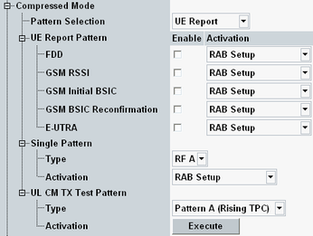

The compressed mode is a prerequisite for UE report measurements on UTRA, E-UTRA or GSM neighbor cells, see "UE Measurement Report Settings". Compressed mode is applied on the R99 channels and all settings can be changed even during a connection is established.
The compressed mode activation and settings are described in this section.
Option R&S CMW-KS410 is required.

Selects the following alternative transmission gap patterns:
- None: the compressed mode is not activated
- UE report pattern: up to five transmission gap patterns for different measurement purposes can be used in parallel. The predefined pattern settings ensure the compatibility of all patterns.
- Single pattern: single transmission gap pattern for a definite measurement purpose
- UL CM TX test pattern: pattern according to the conformance test specification 3GPP TS 34.121, section 5.7
Enables/disables CM pattern to support up to five different neighbor cell measurements. The patterns are independent from each other and can be activated in parallel.
Each pattern can be activated for the whole duration of the connection (RAB setup) or for the duration of a UE report measurement only.
- FDD: monitor WCDMA FDD neighbor cells
- GSM RSSI: monitor GSM neighbor cells and measure the GSM carrier RSSI
- GSM initial BSIC: search for the BSIC and decode it when detecting a new GSM neighbor cell
- GSM BSIC reconfirmation: track and decode the BSIC of a GSM cell after initial BSIC identification has been performed
- E-UTRA: monitor LTE neighbor cells
If the UE does not require compressed mode for the selected pattern, a warning is displayed Selected UE Report Pattern ... not supported by UE. However, the selected pattern has to be configured and sent for activation to the UE.
Remote command:Selects a single transmission gap pattern defined in the 3GPP standards.
Each pattern can be activated for the whole duration of the connection (RAB setup) or for the duration of a UE report measurement only.
- RF A, RF B, A: pattern to monitor WCDMA FDD neighbor cells (see 3GPP TS 34.121 tables 5.7.5, 5.7.8 and C.5.2 set 1)
- B: pattern to monitor GSM neighbor cells and measure the GSM carrier RSSI (see 3GPP TS 34.121 table C.5.2 set 2)
- C: pattern to search for the BSIC and decode it when detecting a new GSM neighbor cell (see 3GPP TS 25.133 table 8.7 pattern 2)
- D: pattern to track and decode the BSIC of a GSM cell after an initial BSIC identification (see 3GPP TS 25.133 table 8.8 pattern 2)
- E: pattern to monitor WCDMA FDD neighbor cells (see 3GPP TS 34.121 table C.5.1 set 1)
- F: pattern to monitor LTE neighbor cells (see 3GPP TS 25.101, table A.22, set 5)
If the UE does not require compressed mode for the selected single pattern, a warning is displayed Selected Single Pattern not supported by UE. However, the selected pattern has to be configured and sent for activation to the UE.
Remote command:Selects and activates a special compressed mode pattern according to the conformance test specification 3GPP TS 34.121, section 5.7.
If "Pattern Selection" = "UL CM TX Test", each pattern is activated via "Execute" button only once.
- Type: compressed mode test patterns; particularly pattern A (rising TPC), pattern A (falling TPC) and pattern B.
For background information, see "TPC Test Setup UL CM". - Activation: triggers the execution of a selected pattern type for the UL compressed mode TX test. At the same time, the UL compressed mode trigger is generated.
If the UE does not require compressed mode for the selected "UL CM TX Test Pattern", a warning is displayed Selected UL CM Tx Test Pattern not supported by UE. However, the selected pattern has to be configured and sent for activation to the UE.
Remote command: